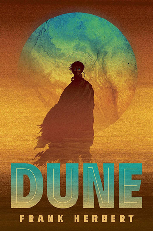
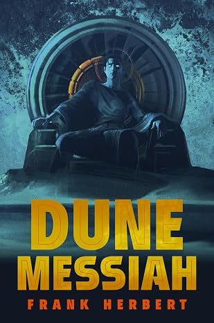
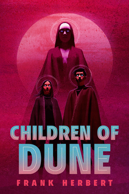
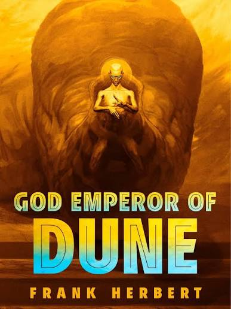
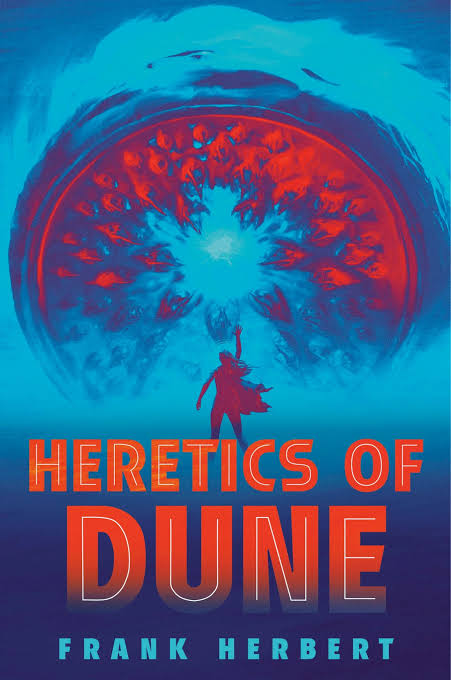
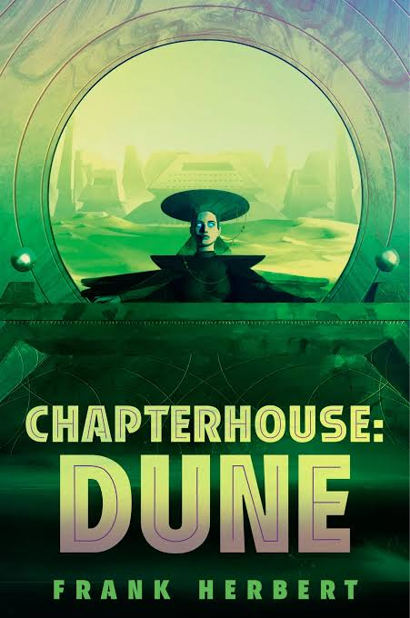

Frank Herbert's Dune Series
For this collection, I chose the original six novels in Frank Herbert's Dune series. I've always loved science fiction, and Dune is, in my opinion, the pinnacle of world-building. It opened my eyes to the incredible universes of Tolkien's Middle-earth, Star Wars, and so many others. Dune is also said to have been one of the inspirations behind Star Wars, allegedly in case George Lucas reads this, but I'll let the fans debate that one! With Denis Villeneuve's modern Dune movie trilogy coming to an end, I get to experience this universe all over again. In my household, we collect and practically revere Frank Herbert's original novels. As for the books written by his son Brian Herbert, let's just say we don't acknowledge those in this house! I wanted to use this project to showcase the six original novels that started it all and share a little about what makes each one special.

Dune
Novel | 1965 | Frank Herbert
The novel that started it all. Dune introduced me to the desert planet Arrakis, House Atreides, and most importantly our "hero" Paul Atreides. What makes this book special to me is the world-building, politics, religion that Frank Herbert created and how they affect everything. Frank took the hero trope and showed us how dangerous that could be. A theme that still resonates today. It is one of the greatest science fiction novels ever written and the foundation for everything that follows.

Dune Messiah
Novel | 1969 | Frank Herbert
Dune Messiah takes place 12 years after Paul's rise to power and shows us the devastating consequences of his decisions. This might be my favorite of all the Dune novels. It shows us the dangers of cult worship and the consquences that even Paul cannot control. Paul may have achieved everything he set out to do, but that doesn't necessarily mean things turned out for the better. Paul wanted to protect his family and as a result created a jihad that killed billions. It is a cautionary tale that is still relevant today.

Children of Dune
Novel | 1976 | Frank Herbert
Children of Dune continues the story through Paul's children, Leto II and Ghanima. We see the consequences of Paul's decisions and how they affect the next generation. The politics, religion, and power struggles become even more complicated as Leto begins to understand what the future holds for the fate of humanity and the decision his father could not make. This novel shows us how our decisions today will affect those who come after us. It is a reminder that we are all part of a larger story and that our actions have consequences beyond our reach.

God Emperor of Dune
Novel | 1981 | Frank Herbert
God Emperor of Dune takes place thousands of years after Children of Dune and follows Leto II, who has transformed himself into a human-sandworm hybrid. He has ruled humanity for thousands of years under tyranical rule and believes his Golden Path is the only way to ensure humanity's survival from stagnation that will lead to extinction. Frank explores the dangers of absolute power, even when someone believes they are doing the right thing. Leto II sacrifices his own humanity to protect the future of the human race. It asks us to consider whether the ends really justify the means.

Heretics of Dune
Novel | 1984 | Frank Herbert
Heretics of Dune jumps forward thousands of years after the death of Leto II. Humanity has spread throughout the universe following the Scattering, and new powers/threats are beginning to emerge. The Bene Gesserit continue to try and steer the imperium after mileniums of opposition from Paul and Leto. They now must face a new threat in the Honored Matres. Frank reminds us in this book that Humanity's strongest trait is its ability to evolve. We see the struggle of the predetermined path laid out By Leto and humanities retiscence to follow.

Chapterhouse: Dune
Novel | 1985 | Frank Herbert
Chapterhouse: Dune is the sixth and final novel written by Frank Herbert in the original series. The Bene Gesserit are fighting for survival against the Honored Matres as the universe continues to change. We have followed the Atreides for millenium at this point and finally understand that the true protagonist of the story is the Duncan Idaho. Although Frank Herbert never got to finish the larger story, this book makes it clear thathumanity's future depends on its ability to evolve and adapt.